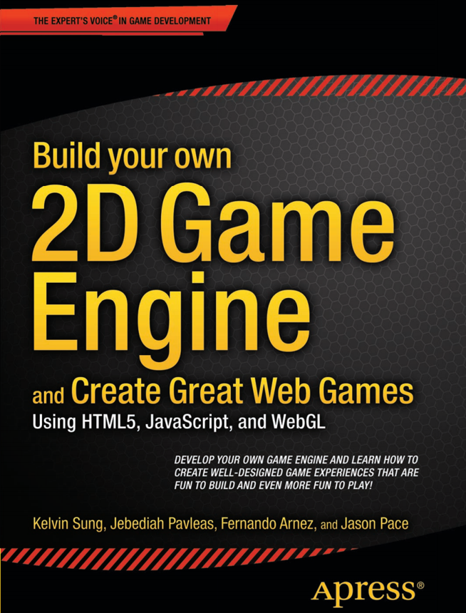

GTCS Game Engine:
Tutorial Guide
Overview
The GTCS Game Engine is an API written in HTML, JavaScript and WebGL that allows for the fast deployment of 2D games. This library is designed specifically for computer science students and faculty with no background in computer graphics or video games. This guide consists of a collection of tutorials demonstrating the ba sics of how to work with the GTCS Game Engine. You can download a bundle of the files here.
The Tutorials |
For more information on how the game engine works, refer to the definitive book on the subject... Build your own 2D Game Engine. |
- Tutorial 0: Setting Up the Environment
- Creating an HTML page for presenting a game
- Parameters for the WebGL Canvas
- Tutorial 1: Basic Application Structure
- Understanding the scene, camera, renderable and game objects
- Declaring and initializing member variables
- Working with the game loop for updates and draws
- Tutorial 2: Resources, & User Input
- Understanding and loading resources to create a texture renderable
- Loading audio resources for sound
- Keyboard & mouse input
- Default resources for font renderable and ambient lighting
- Tutorial 3: Sprites, Animation, Collision Detection & Parallax
- Creating a sprite renderable
- Using multiple renderables to demonstrate collision detection
- Understanding and using parallax and scrolling
- Tutorial 4: Rigid Bodies and Particle Systems
- Tutorial 5: Illumination
- Tutorial 6: Shadow
|

|